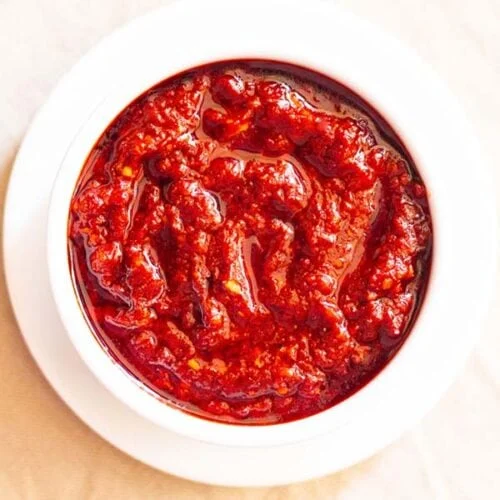

Ingredients
- 15-18 Dry Red Kashmiri Chillis*
- 3-4 tablespoons Sesame Oil or any Cooking Oil
- 1/4 cup finely chopped Onion or 3-4 Shallots
- 10-12 small Garlic Cloves, chopped (approx. 2½ tablespoons)
- 1/2 tablespoon finely chopped Ginger (approx. 1-inch)
- 1/4 teaspoon Dark Soy Sauce or 1/2 teaspoon Light Soy Sauce
- 1/4 teaspoon Black Pepper Powder
- 1½ tablespoon Tomato Sauce
- 1 tablespoon Sugar
- Salt to taste
Directions
- Remove stems from dry red chillis. Cut chilli into halves, open them and remove seeds. Discard the seeds.
- Soak chilli halves in warm water for 30 minutes.
- Drain excess water from soaked red chillis. Transfer them to a small jar of a grinder. Add 2 tablespoons water.
- Grind into a smooth paste.
- Heat 3-4 tablespoons oil in a pan over medium flame. Add finely chopped onion and sauté until it turns light pink.
- Add finely chopped ginger and garlic, sauté for around a minute until raw smell of garlic goes off.
- Add ground red chilli paste. Mix well and sauté for a minute.
- Add 1½ tablespoon tomato sauce.
- Add 1 tablespoon vinegar.
- Add 1/4 teaspoon black pepper powder, sugar and salt.
- Mix well and cook for a minute. Add 1/4 cup water and mix well.